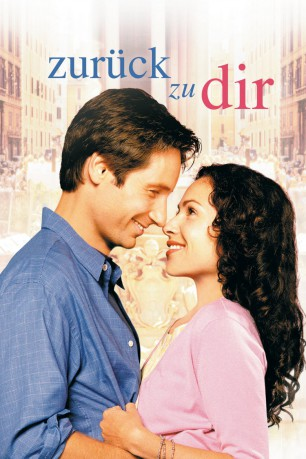

#780 Zurück zu dir
Alternativ: Return to Me
 
 IMDB-Wertung: 6.9 / 10
IMDB-Wertung: 6.9 / 10  Metascore: 54
Metascore: 54 
Bob Rueland (David Duchovny) ist ein erfolgreicher Bauleiter und Chef seiner eigenen Firma. Auch seine Frau Elisabeth (Joely Richardson) liebt Bob abgöttisch. Eigendlich könnte Bob's Leben nicht besser laufen; doch ein Unfall ändert alles. Elisabeth kommt ums Leben und mit einem Schlag ist Bob's ganzer Lebensinhalt dahin. Nach einiger Zeit lernt Bob die zauberhafte Grace (Minnie Driver) kennen. Wie der Zufall so will verlieben sich beide ineinander und ihr junges Glück scheint perfekt. Was Bob jedoch nicht weiss; Grace trägt seit einer schweren Operation das Herz seiner verstorbenen Frau Elisabeth in sich ...
Jahr: 2000
Dauer: 115 Minuten
FSK: 6
Land: USA Studio: MGMTonspuren: DD5.1 - ,
Untertitel:
Auflösung: 1080p (1920x1040) Größe: 10444 MB
Genre: Komödie, Drama, Liebe
Regisseur: Bonnie Hunt
Drehbuch: Bonnie Hunt, Don Lake, Andrew Stern, Samantha Goodman, Bonnie Hunt
Soundtrack: Nicholas Pike
Darsteller:
 David Duchovny als Bob Rueland
David Duchovny als Bob Rueland Minnie Driver als Grace Briggs
Minnie Driver als Grace Briggs Carroll O'Connor als Marty O'Reilly
Carroll O'Connor als Marty O'Reilly Robert Loggia als Angelo Pardipillo
Robert Loggia als Angelo Pardipillo Bonnie Hunt als Megan Dayton
Bonnie Hunt als Megan Dayton David Alan Grier als Charlie Johnson
David Alan Grier als Charlie Johnson Joely Richardson als Elizabeth Rueland
Joely Richardson als Elizabeth Rueland Eddie Jones als Emmett McFadden
Eddie Jones als Emmett McFadden James Belushi als Joe Dayton
James Belushi als Joe Dayton Marianne Muellerleile als Sophie
Marianne Muellerleile als Sophie Brian Howe als Mike
Brian Howe als Mike Chris Barnes als Jeff
Chris Barnes als Jeff- Adam Tanguay als Adam Dayton
- Joseph Gian als Singer / Joey Gian
 Tom Virtue als Dr. Senderak
Tom Virtue als Dr. Senderak David Pasquesi als Tony
David Pasquesi als Tony Don Lake als Transplant Man
Don Lake als Transplant Man- Holly Wortell als Marsha
- Tim O'Malley als Patrick
 Maureen Mendoza als Nurse / Waitress , uncredited
Maureen Mendoza als Nurse / Waitress , uncredited- Laura Orrico als Dancer , uncredited
- William Bronder als Wally Jatczak
- Karson Pound als Karson Dayton
- Tyler Spitzer als Tyler Dayton
- Laura Larsen als Laura Dayton
- Austin Samuel Hibbs als Austin Dayton
- Dick Cusack als Mr. Bennington
- Holly Biniak als Big Hair
- Tamara Tungate als Celia
- Thomas A. Senderak als Paramedic
- Jennie Lew Tugend als Jennie
- Claire Lake als E.R. Nurse
- Carol Hunt als Nurse Alice
- Patrick Hunt als Danny
- Lindsay Allen als Delivery Girl
- Becky Veduccio als Shari
- Peter B. Spector als Valet Guy
- Darryl Warren als Father Rudy
- Rudy Gabor als Italian Singer
- William Zirko als Italian Singer
- Edward Ballog als Italian Singer
- Angelo Ricco als Italian Singer
- Alice Hunt als Nancy
- Franklin E. Jones als Chester
- Tom Hunt als Tom
- Jack Cooper als Ballroom Bartender
- La Taunya Bounds als Zebra Girl
- Harry Teinowitz als Ice Cream Clerk
- Walt Jacobs als M.C.
- Alan Gresik als Pianist - The AG Orchestra
Datei: X:\2000\Zurück zu dir (2000, FSK6, 1920x1040).mkv seit 23.03.2015
Festplatte: HD 1996-2002
 Es gibt insgesamt 82 Filme in der Gruppe '2000'
Es gibt insgesamt 82 Filme in der Gruppe '2000'